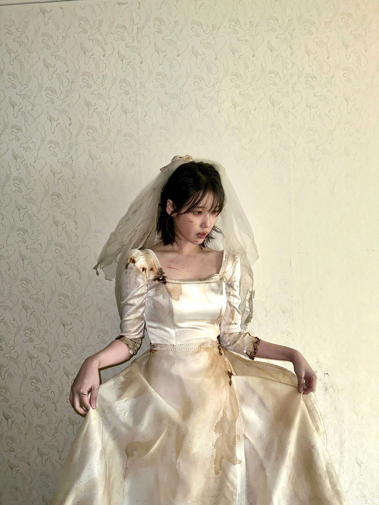

아이유-love wins all


미니멀하고 빈티지한 피아노 인트로로 운을 띄워 맥시멈한 아웃트로에
이르기까지 기승전결이 확실한 발라드 곡으로 ‘비밀’, ‘이름에게’, ‘Love
poem', ’아이와 나의 바다‘등 팬들에게 큰 사랑을 받아온 아이유의 대곡
발라드 시리즈를 이어간다.
후반부로 갈수록 전투하듯 휘몰아치는
보컬과 화려한 심포니를 연상시키는 악기 구성들이 감정을
극대화한다.
마치 하늘을 유영하는 듯한 리듬과 그 위에 쌓이는 하모니 테마들이
8분의 6박자의 매력을 높이고, 넓게 펼쳐져 전체 사운드를 온화하게
감싸주는 스트링은 곡의 너비와 깊이감을 더한다.
아이유의 섬세한
보컬 테크닉과 레인지 넓은 멜로디의 조화, 멈추지 않고 달려가는 고조를
따라가다 보면 어느새 맨 끝에 다다라 아이유의 마지막 숨 한 마디까지
집중하게 될 것이다.
찬찬히 너를 두 눈에 담아
한 번 더 편안히 웃어주렴
유영하듯 떠오른 그날 그 밤처럼,
나와 함께 겁 없이 저물어줄래?
